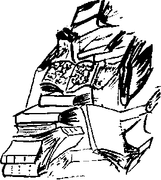

BASMA - YAZMA KİTAPLAR VE MAKALELER
Ahmed Tevfik Paşa, Şive-i Osmani (Asitâne, 1291)
Aşıkagazade Çelebi, Tevarih-i Hevakin (Istanbul, 2004)
Aylmer-Johnson, Meredith. “The Heroine Disguised as Man: The Turkish Case”, Living Feminism II (1998), ss. 211-564 Aynacı, Ali Haydar. Ferman Padişahın Dağlar Bizimdir Toroslar Aslanı Tasviri Bey (Maraş, 1971)
Bali Efendi, lnebolevi. Kenz-ül Kanaat fil-Mecalis-ül Fırsat, Afaki Efendi Kütüphanesi, Hwace Halil yazmaları, HH 1912 Biçare Efendi, Sefer-ndme-i Haç-Hilal, Afaki Efendi Kütüphanesi,
Hwace Cemil yazmaları, HC 025
Bozkonak, Y. Sadık. Eski Yazımızla Yazdmış Eser Adlarının Günümüz Türkçesindeki Karşılıkları (Konya, 1967)
Cebenoyan, H. Kâmil. Eserleri ve Hayatı ile Florinalı Mehmed Rüşdi (Ankara. 1941)
Cusinet, Vitale. Voyage de Constantinaple â Paris en 1733 (Paris, 1735) Ceylanı, Utku Suat Ferid. özgürlük Güneşi Yakar (İstanbul, 1990)
Ceylani, Utku Suat Ferid. (Çaydanlık, Vuslat) Lalettayin Lâlendam - (İstanbul, 2004) Cerensoy, Taçam. Dev Davanın Dev Adamı Tasviri Beg (İstanbul, 1977) Cerensoy, Taçam. Devler Devi Tasviri Beg Estergon önünde (İstanbul, 1978) Cousseau, Jacques. Histoire de la Mer Rouge (Paris, 1678)
Crow, Hertford. “Tovvards a Collective Bibliography of Taswiri Duvduwani Hffendi”, IJGUMES LV1I/2 (1978), ss. 121-265. Çölemerik, Mirsat. Bozûrük’ün Kör Bacağındaki Karıncalanma (İstanbul, 1993) Derman, Dursun. Anadolu İnançlarında Arslan Tasvirleri ve Allah’ın Arslanı Tasviri Bey (İzmir, 1974)
Dost, Ferizet. Emeğine Karşı Yemek: İlk Türk Sosyalisti Tasviri Bey (Zonguldak, 1976)
Enbiya Çelebi, Mektubat (Dersaadet, 1248)
Esfelüddin (Bkz. Faik Ladin), Üf Teleme Peyniri (Dersaadet, 1328) Esfelüddin (Bkz. Faik Ladin), Peynirci Perihan (Dersaadet, 1328)
Faik Ladin Bey, (ed. Salim Kirazcı), Garb Türklerinin Felemenk Peynir istihsali Usullerine Katkısı: Felemenk Ellerinde Osman Ağa (İstanbul, 1976)
Faik Ladin Bey, Deme Daire-i Peynircisi (Dersaadet, 1330)
Faik Ladin Bey, Lafla Peynir Gemisi Yürümez (Dersaadet, 1330)
Faik Ladin Bey, Peynirci Baba (Dersaadet, 1331)
Faik Ladin Bey, Sinekli Peynirci (Istanbul, 1922)
Faik Ladin Bey, Zemberek Halim Peynir Yiyor (Ankara, 1929)
Fiderot, Antoine. Les Grands luminaires de la Terre et leurs Temps (Paris, 1728)
Gordion, J. Isaac. Kendüyi Halk Eden insan (İstanbul, 1969)
Gördüm, Osman Hulûsl. Yok Olması Gereken Değerlerimiz: Osmanlı ve Ercümend Başyapıtları (Âsitâne, 2004)
Hamdawi, Mohammad. “The Medieval Kurdish Hero Taswiri Bey and the Queen of the Serpents”, IJOKAKS, XL, (1996), ss. 134-187.
Hamdi Dücan, Işrak ûl-Uşşak (Dersaadet, 1227)
Hamedani, $ehname-i Yezdicerd (Tahran, 1367)
Hwace Refahüddin Efendi, Hukuk Çelişkileri (?) ve Mensûh Olması iktiza Eden Kavdntn (Ankara, 1998)
Hwace Refahüddin Efendi, Zıii-i Tasvir (?, ?)
lorganus, Johann Marek. Osmanlı Devletinin iptidalarında Sazciyan-ı Rum Hareketi (Asitâne, 1339)
Jenkins, Mary. “Decoding and Deconstructing a Contemporary Myth:
The Taswiri Stories as Text and Pretcxt", Post-modem Times VI (1997), ss. 12-14
Jüt, Erhan. Lor (İstanbul, 2000)
Kafdaglı, Ferhat. Bizans'la Namlı Türk Pehlivanları (İstanbul, 1954) Karmanyolacı, Feyhaman. Vuslat Beni Islat (?, 1979)
Kaska, Herman. Bugs (Londra, 1956)
Kerteriz, Murat, Tevdrih-i Turuk (İstanbul, 1977)
Laborious, Edward. “Race, Class, Gender in Turkish Popular Stories:
The Taswiri Cycle Revisited", 1JPMS IX (1999), ss. 223-245 Lüle, Kahraman. Tasviri E/endi'nin Vecize-i Şerifeleri (Kayseri, 1967) Maudlaire, Yves. Lungs and Livers (Londra, 1923)
Meddücezir, Şakire. Mühürledim Zamanı Gümüş Dairelerle (İstanbul, 2002) Mükrimin Efendi, Keşjülfünûn (İstanbul, 1987)
Mürdüm, Osman Ferdi. Vuslatın Demi Olmaz (İstanbul, 1979,1999) Mürdüm, Osman Ferdi. Karadere’nin Canları (İstanbul, 1979)
Mürdüm, Osman Ferdi. Börülce Mahmut ile Horlak Kâmil (İstanbul, 1980) Mürdüm, Osman Ferdi. Canlar Ayılası Değil (İstanbul, 1980)
Mürdüm, Osman Ferdi. Anadolu Halk Inançlarında Şeyh, Tekke, Tarîk ve Çapul (Ankara, 1982)
Mürdüm, Osman Ferdi. Ve Orak ile Biçildim (İstanbul, 2002)
Mürdüm, Osman Ferdi. Yaşamın Düşsel Tuğlalan (İstanbul, 2007)
Nesivar, Fehime Ebru. Böcekli Manav (Ankara, 1929) ökkeşoglu, Nizameddin. Musul Meselesi ve Uluslararası Hukuk (Ankara, 1964)
ökkeşoglu, Nizameddin. Haşmet Domaniç Suzan'da Tasviri Kubad Duvduvani Efendi’yi Okumuş Olsa Musul'u Hiç Verir miydi7 (Ankara, 1966)
ökkeşoglu, Nizameddin. T. Habibay 11 Eylül ihtilalinde lbni Muhanna'yı Bilse Yine İhtilalci Olur muydu? (Ankara, 1966)
Parşömen, I. Haluk. Devşirme Düşmanlığının İzahlı Kütüğü (İstanbul, 1951) Pupa, Naci. Leninci Şeyh (İstanbul, 1976)
Pusank, İhya İkmal (Hayati Kâmil). Elhan-ı Sayf (Dersaadet, 1341)
Sen, Cüneyt (Pırlanta, Meymune). Tasviri Efendi Hazretlerinin Validei Muhteremeleri Nuriye Sultan (Giresun, 1969)
Soyarslan, Hami. Kubad Et Beni Abad (İstanbul, 1974)
Şeyhi, Rihlet eUŞeyhi fi Diyar-ûl Yecüc vel-Mecüc, Afaki Efendi Kütüphanesi, Hwacc İhsan yazmaları, HI 112 Razı Tenviri (?), Duhter-i Ekmekçi (Dersaadet, 1328)
Tanpınar, Ahmet Hamdi. Saatleri Ayarlama Enstitüsü (İstanbul, 1962) •Tanrıkulu, E. Namık. Bozkırdan Esen Rüzgâr (İstanbul, 1953)
Tasviri Kubad Duvduvani Efendi, Kitab-ül Tasvir v’el-Tagyirfı’l-Müruc-ül Tahayyül, Afaki Efendi Kütüphanesi, Hwace İhsan yazmaları, Hl 234 Tahassür, Hamud. Aşk Günlerine isyan (İstanbul, 1999)
Tahmuras, Senai. Tasviri Efendi’den Cihana Bedel Fıkralar (Kastamonu, 1968)
Terrida, Alex. Le Papiermacht (Paris, 1989)
Tosun Paşa, Basralı. Zeyl-i Keşfül/ünun (Dersaadet, 1282)
Uluç, Pertev. Büyük Çağrışım Denetim ve imha Lügati (Asitâne, 2001) Vamık Cemal (Toplar, Hayri), Bütün Şiirleri (Ankara, 1985)
Zarefşan, Abdi. 500 Ünlü Türk Ansiklopedisi (Istanbul, 1959)
Zimmer, Ludvig H. Tevarih-i Düvel-i Ulya (Asitâne, 1342)
Zoltaire, Marcus A. Histoire de La Lune (Paris, 1732)
GAZETELER, SÜRELİ YAYINLAR
Alâmet-i Sabah
Aparatçik
Daily Turd
La Terre
Pro antica & Nötre Domus
Pullman Husbandry Review
Oskar
Rüya
Sahne
Sözcü
Uhuvvet-i Camia
Üç bine Giderken
FİLMLER
Dönmez, Hayati (Hami Soyarslan). Kubad Et Beni Abad, 1975
Wholeman, M. Joe. İmparatorluk Bir Çaktı mı Tam Çakar (Commomwealth Strikes A Match), 1984
Z. Viırtoli, Double-whipped in New York, 1997
RESİM
Ceylani, Utku Suat Ferid. Melissa’nın Gözleri (Asitâne, ?)